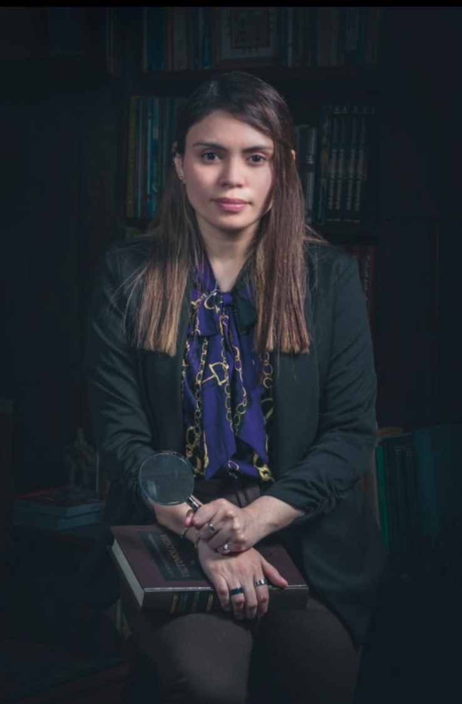

Áreas de Experticie
Descubre cómo nuestras especialidades resuelven casos complejos con experiencia práctica y tecnología de punta.
Grafotecnia
Caso práctico: Resolución de un caso de testamento falso donde se detectó una firma alterada en un documento legal. El desafío fue identificar la superposición de tinta, resuelto con análisis microscópico.
Herramientas utilizadas: Microscopios forenses, lámparas de luz ultravioleta y software de comparación de trazos.
Balística
Caso práctico: Análisis de un tiroteo urbano donde se identificó el arma utilizada a partir de marcas en casquillos. El reto fue reconstruir trayectorias en un entorno caótico, logrado con simulación balística.
Herramientas utilizadas: Equipos de comparación balística (IBIS), software de simulación 3D y medidores de ángulos.
Criminalística
Caso práctico: Reconstrucción de un robo con múltiples evidencias, incluyendo huellas y ADN, resuelto tras analizar patrones de entrada forzada en una vivienda.
Herramientas utilizadas: Kits de recolección de evidencia, tecnología 3D para reconstrucción y analizadores de ADN portátil.
Dactiloscopia
Caso práctico: Identificación de un sospechoso en un caso de hurto mediante huellas latentes en una superficie de vidrio, superando la dificultad de baja visibilidad con técnicas de revelado.
Herramientas utilizadas: Polvos de revelado, láser forense y sistemas AFIS (Automated Fingerprint Identification System).
Informática Forense
Caso práctico: Recuperación de datos borrados de un disco duro en un caso de fraude, donde se extrajo evidencia clave a pesar de encriptación, logrando su presentación en juicio.
Herramientas utilizadas: Software EnCase, herramientas de recuperación de datos y estaciones de trabajo forenses.
Equipo y Especialista
L. Alejandra Ovalle Rodríguez
Licenciada en Investigación Criminal y Forense, Magíster Internacional en Balística y Armamento, Magíster Internacional en Psicología Forense, Especialización en Psicología Forense en Niños, Niñas y Adolescentes, Perito Calígrafo, con un Postgrado en Documentoscopia y Grafotecnia e Ingeniera en Sistemas. Con 5 años de experiencia trabajando en diferentes casos y 3 años como docente, aporta un enfoque integral y especializado a cada investigación.